Rekomendasi Karyawan Teladan Berdasarkan KPI dengan Neural Collaborative Filtering Berbasis Mobile
Aplikasi mobile berbasis AI untuk prediksi dan rekomendasi karyawan teladan menggunakan Neural Collaborative Filtering (NCF).
Department of Informatics Engineering, Esa Unggul University
Selamat pagi/siang, perkenalkan kami dari kelompok TalentAchieve. Project ini adalah aplikasi mobile berbasis AI yang membantu HRD dan karyawan mengevaluasi kinerja secara transparan menggunakan model Neural Collaborative Filtering.
Latar
Belakang
Kesenjangan antara evaluasi kinerja manual dan kebutuhan transparansi karyawan modern.
Masalah yang Ingin Diselesaikan
- Evaluasi kinerja karyawan masih dilakukan secara manual dan subjektif
- Target KPI tidak terukur secara real-time
- Proses HR lambat dan rentan terhadap bias penilaian
- Karyawan tidak mengetahui capaian performa secara transparan
Kami mulai dari masalah nyata di lapangan: evaluasi kinerja karyawan masih manual dan subjektif, sehingga keputusan HR seperti promosi atau reward jadi tidak konsisten dan karyawan tidak tahu progres mereka sendiri.
Tujuan
Penelitian
Empat sasaran utama yang membingkai seluruh scope pengembangan sistem.
Apa yang Ingin Dicapai
Membangun aplikasi untuk tracking dan evaluasi KPI yang transparan bagi karyawan dan HRD.
Mengintegrasikan Neural Collaborative Filtering untuk prediksi dan rekomendasi karyawan teladan.
Menyediakan dashboard terpisah untuk HRD (monitoring) dan Employee (self-tracking).
Membangun pipeline ML: preprocessing, training, evaluasi, inferensi.
Dari masalah tadi, kami menetapkan empat tujuan: membangun aplikasi tracking KPI yang transparan, mengintegrasikan model NCF untuk prediksi, menyediakan dashboard terpisah untuk HRD dan karyawan, serta membangun pipeline machine learning yang utuh dari awal sampai akhir.
Arsitektur
Sistem
Tiga layer saling terhubung untuk menghadirkan prediksi performa secara real-time.
Bagaimana Sistem Bekerja
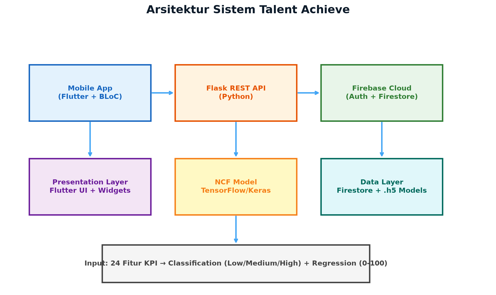
Flutter + BLoC — UI responsif
Repository pattern + Flask REST API + Model NCF
Firebase Authentication + Cloud Firestore
Secara arsitektur, sistem kami terdiri dari tiga layer: Flutter dengan BLoC di sisi presentasi, Flask REST API yang menjalankan model NCF di sisi business logic, dan Firebase — Authentication serta Firestore — di sisi data.
Metode
Penelitian
Dataset, responden, dan metodologi pengembangan yang digunakan.
Dataset & Metodologi
Untuk penelitiannya, kami memakai dataset 5.000 baris dengan 24 fitur KPI, menguji usability ke 30 responden, dan mengembangkan seluruhnya dengan metodologi waterfall menggunakan Flutter, Flask, dan TensorFlow.
Model
NCF
Dual output head — klasifikasi dan regresi dari satu representasi bersama.
Dual Output Head
24 fitur KPI karyawan
128 → 64 → 32 neuron, representasi fitur bersama
Klasifikasi — softmax 3 kelas (Low/Medium/High)
Regresi — linear, skor 0–100
Model NCF ini punya dua output sekaligus dari satu jaringan yang sama: 24 fitur KPI diproses lewat dense layer 128-64-32, lalu keluar sebagai klasifikasi Low/Medium/High dan skor regresi 0 sampai 100.
Hasil
Aplikasi
Autentikasi — titik masuk aplikasi dengan dua peran berbeda.
Login & Pemilihan Peran
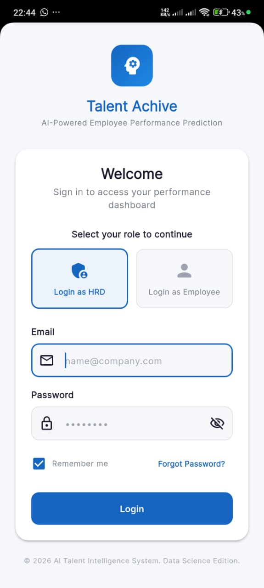
Pengguna memilih peran — HRD atau Employee — sebelum login, sehingga dashboard dan hak akses yang tampil menyesuaikan otomatis.
Ini tampilan login aplikasi kami. Pengguna memilih peran terlebih dahulu — HRD atau Employee — sebelum masuk, karena kedua peran punya dashboard dan hak akses yang berbeda.
Hasil
Aplikasi
Per group (HRD) — ringkasan eksekutif seluruh tim dalam satu layar.
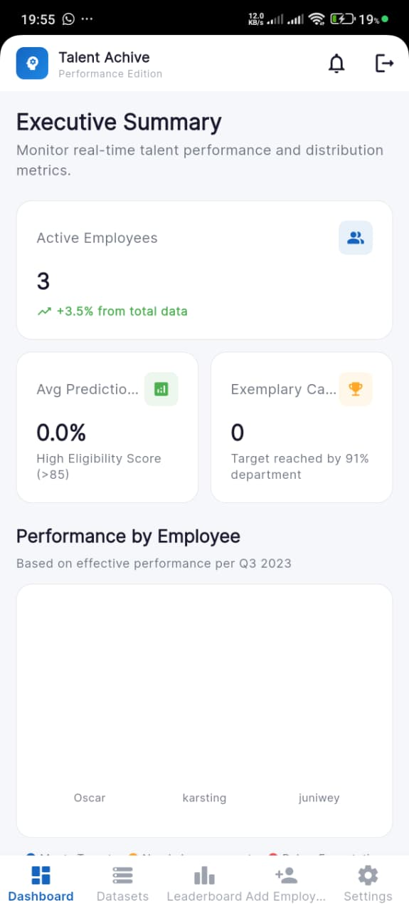
Executive Summary & Leaderboard
Active employees, avg prediction score, dan exemplary candidates ditampilkan real-time.
Ranking karyawan berdasarkan skor prediksi NCF, lengkap dengan status badges.
Setelah HRD login, mereka langsung disambut Executive Summary — ringkasan jumlah karyawan aktif, rata-rata skor prediksi, dan jumlah kandidat teladan, lengkap dengan grafik performa per karyawan.
Hasil
Aplikasi
Per group (HRD) — mengunggah data dan menjalankan pipeline AI.
Dataset Management
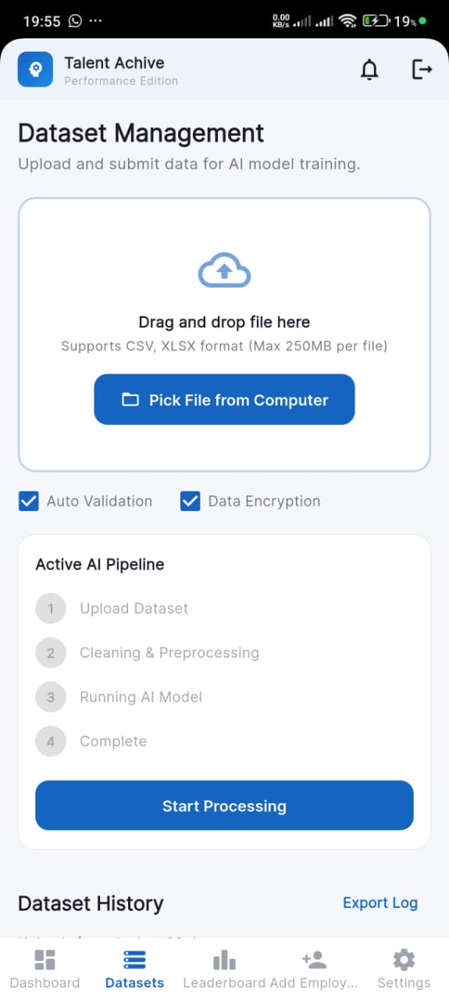
Upload dataset → cleaning & preprocessing → menjalankan model AI → selesai, dengan auto validation dan enkripsi data.
Di menu Dataset Management, HRD bisa mengunggah file CSV atau XLSX berisi data KPI karyawan. Sistem otomatis menjalankan empat tahap pipeline AI: upload, cleaning, menjalankan model, sampai selesai.
Hasil
Aplikasi
Per individu (Employee) — memantau progres kinerja sendiri secara real-time.
Performance Hub
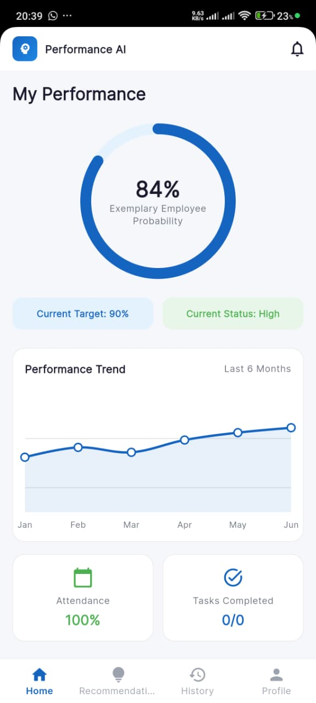
Menampilkan probabilitas kinerja (Exemplary Employee Probability) dan tren performa 6 bulan terakhir bagi karyawan.
Di sisi karyawan, Performance Hub menampilkan gauge lingkaran yang menunjukkan probabilitas kinerja mereka, beserta tren performa enam bulan terakhir — jadi karyawan bisa memantau progres sendiri secara real-time.
Hasil
Aplikasi
Per individu (Employee) — riwayat skor performa bulanan.
Performance History
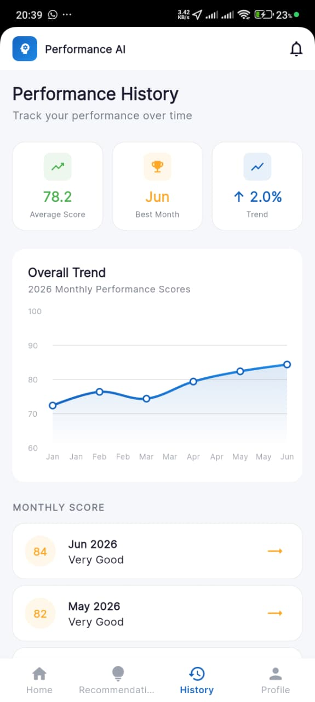
Average score, best month, dan tren dalam grafik, plus rincian skor per bulan dengan label kualitatif seperti "Very Good".
Selain gauge real-time, karyawan juga bisa membuka Performance History untuk melihat rata-rata skor, bulan terbaik, dan rincian skor tiap bulan — jadi progres jangka panjang tetap terpantau, bukan cuma snapshot hari ini.
Hasil
Aplikasi
Per individu (Employee) — analisis kekuatan dan kelemahan berbasis AI.
NCF Insights — Performance AI
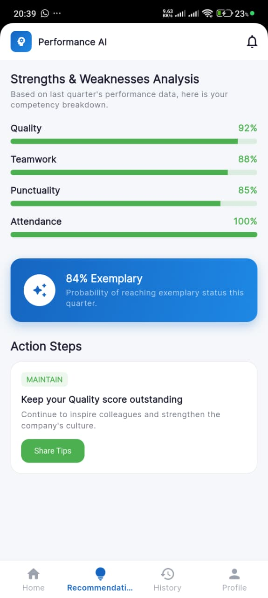
Skor per kompetensi (Quality, Teamwork, Punctuality, Attendance) beserta action steps yang bisa langsung ditindaklanjuti.
Fitur Performance AI ini memberi analisis kekuatan dan kelemahan karyawan berdasarkan empat kompetensi — Quality, Teamwork, Punctuality, Attendance — sekaligus rekomendasi action steps yang bisa langsung ditindaklanjuti.
Hasil
Aplikasi
Per individu (Employee) — profil KPI 5 dimensi yang bisa diekspor.
Employee Analysis
Lima dimensi KPI divisualisasikan sekaligus, hasil analisisnya dapat diekspor langsung ke PDF.
Employee Analysis menyajikan radar chart lima dimensi KPI supaya HRD bisa melihat profil kekuatan setiap karyawan secara visual, dan hasil analisisnya bisa diekspor langsung ke PDF.
Hasil
Aplikasi
Dukungan pengguna — FAQ dan kontak bantuan langsung dari aplikasi.
Help Center
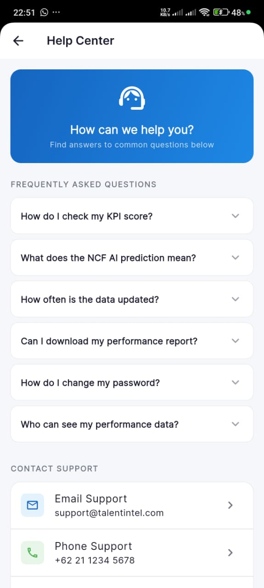
Pertanyaan umum seputar skor KPI dan prediksi AI, ditambah kontak email dan telepon support.
Kami juga menyediakan Help Center dengan FAQ seputar skor KPI, cara kerja prediksi AI, dan kontak support — supaya pengguna baru tidak kebingungan saat pertama kali memakai aplikasi.
Evaluasi
Model
Klasifikasi dan regresi diuji terhadap 750 sampel data test.
Evaluasi Model NCF
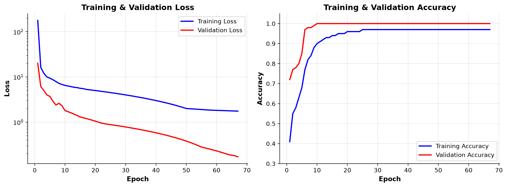
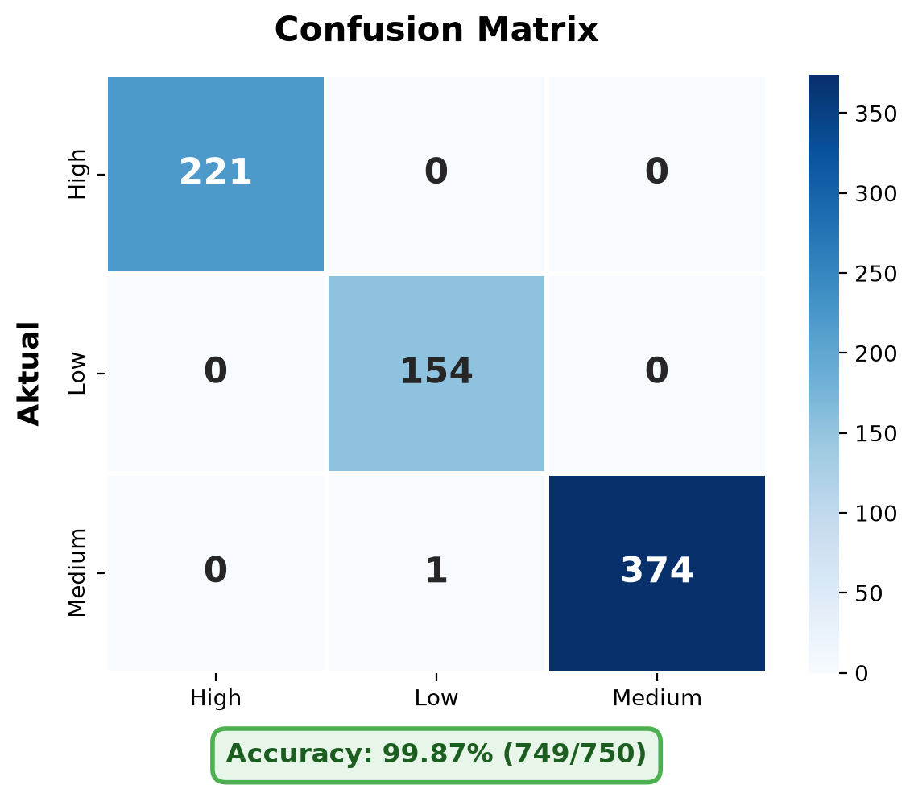
| Accuracy | 99.87% |
| Macro F1 | 0.9985 |
| RMSE | 0.8670 |
| MAE | 0.6212 |
Untuk evaluasi modelnya sendiri, kami menguji dengan 750 sampel data test. Hasilnya, akurasi klasifikasi mencapai 99,87 persen — hanya satu kesalahan prediksi — dengan RMSE regresi sebesar 0,87.
Evaluasi
Usability
System Usability Scale dari 30 responden pengguna aplikasi.
Skor SUS: 84 — Sangat Baik
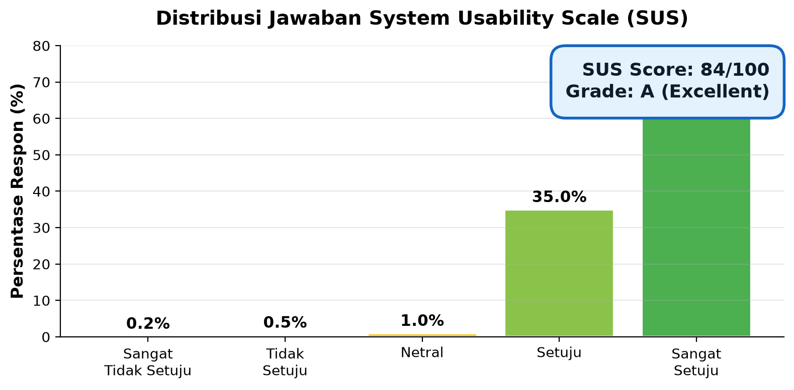
SUS rata-rata 84 dari 30 responden menunjukkan tingkat kegunaan yang tinggi dan penerimaan pengguna yang kuat. Skor di atas 80 dikategorikan "Sangat Baik".
Kami juga mengukur usability lewat System Usability Scale ke 30 responden, dan hasilnya skor rata-rata 84 — masuk kategori Grade A atau "sangat baik" menurut standar interpretasi SUS.
Kesimpulan
Ringkasan capaian utama dari keseluruhan pengembangan sistem.
Apa yang Berhasil Dicapai
- Model NCF berhasil diintegrasikan ke mobile app dengan akurasi 99.87% (1 kesalahan dari 750 sampel test)
- Pipeline ML end-to-end berjalan optimal dari preprocessing hingga inferensi
- Aplikasi menyediakan evaluasi KPI transparan dan objektif untuk HRD dan karyawan
- Evaluasi SUS skor 84 (Grade A) menunjukkan usability sangat baik
Kesimpulannya, model NCF berhasil kami integrasikan ke aplikasi mobile dengan akurasi tinggi, pipeline machine learning berjalan end-to-end, dan aplikasi ini terbukti membantu evaluasi KPI yang transparan bagi HRD maupun karyawan.
Saran
Lima arah pengembangan lanjutan untuk memperkuat sistem.
Rencana Pengembangan Selanjutnya
Data karyawan real dari sistem HRIS.
Terhubung dengan database HR existing.
Cohort analysis & trend forecasting.
Hyperparameter tuning & experiment tracking.
Akses data tanpa koneksi internet.
Ke depannya, kami mengusulkan lima pengembangan: memakai data HRIS asli, integrasi real-time, analitik lanjutan seperti cohort analysis, optimisasi model lewat hyperparameter tuning, dan mode offline.
Terima Kasih
Neural Collaborative Filtering · KPI · Employee Performance · Flutter · Firebase · Machine Learning · Mobile Application
Sekian presentasi dari kami. Terima kasih atas perhatiannya, dan kami siap menerima pertanyaan.